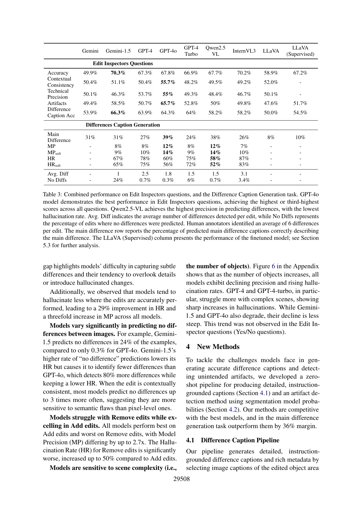

一句话结论
图像编辑中“模型改对了主目标”与“评审器识别了所有副作用”是两件事：EditInspector提供漏检与幻觉的直接反证，但其模型辅助参考、较低人评κ和有限来源域，也限制了用它证明评审器普适失效。[2]
问题定义
本文检验视觉语言模型（vision-language model, VLM）能否担任编辑评审器：检查指令执行、上下文、技术质量、伪影，以及描述主差异和全部差异。不是新编辑生成模型的排行榜。准确但意外的编辑单列为人工类别，揭示文字命中不等于符合用户预期（§2–3，pp.29504–29507）。[2]
方法概述
- 人工框架：从MagicBrush测试集1,053 edits中标注783条，每条3人；先给自动生成主差异caption，再由人改正/补充，形成参考。人工辅助流程不是完全独立于生成器的金标准。[2]
- VLM问答：准确/准确但意外合并为正类；伪影二分类只把“显著”作为阳性，轻微伪影不会按同一标准计入。[2]
- 差异指标：抽取对象—目标—动作三元组。论文称Model Precision的MP实际以人工差异数为分母，更接近覆盖率/召回率；HR以模型预测差异为分母。匹配由GPT判断，soft版本甚至容忍源/目标反转（A.2，pp.29514–29515）。[2]
- 改进pipeline：按编辑mask取紧裁剪、扩展裁剪和整图，用Gemini描述、WordNet匹配指令名词，再用GPT-4生成caption。Detic方案检测mask附近对象置信度下降及非目标对象意外消失/出现。它额外获得mask、指令和多次调用，不能视为与裸双图caption同预算（§4/A.5）。[2]
核心实验与结果
| 位置 | 论文报告 | 解释边界 |
|---|---|---|
| 表3，p.29508 | GPT-4o主差异准确39%、MP12%、HR60%；Qwen2.5-VL MP12%、HR58% | 能找主变化不等于覆盖细节；12%不是模型输出的precision |
| 表3 | GPT-4o上下文55.7%、技术质量55%、伪影65.7% | 不同维度差异明显，不能笼统写所有任务均为随机 |
| §4.1 | 多尺度pipeline主差异75%，裸GPT-4o39% | 输入和调用预算不同；参考caption受pipeline辅助，有锚定风险 |
| §4.2 | Detic方案64% balanced accuracy，GPT-4o65.7%；组合oracle86.8% | 新方法没有超过最强GPT-4o；oracle不是可执行的部署选择器 |
| 表3/§5 | 监督LLaVA准确67.2%、伪影51.7%、主差异10% | 监督有局部改善，但caption远低于GPT-4o39% |
| A.13 | IER准确性balanced accuracy59.2%对54.2% | 120派生测试例实际来自30条原始编辑，不是120独立源图 |
以上均为正式PDF报告值，未独立复算。[2]

人评、数据与统计边界
A.6披露每样本$0.70、平均$18/小时，付费资格测试、每条3人、决策树指南。主文高投票一致率不能替代机会校正一致性：准确性κ>0.41，伪影/严重度/caption等κ=0.21–0.40，视觉一致性与技术质量κ仅0.01–0.20。后两维真值本身不稳定，应先收窄rubric，不能直接扩大榜单。[2]
783是edit条数；源图/编辑链独立数量、未入选条目的选择机制、源图级置信区间不充分。§6用同一MagicBrush来源的100 edits增加UltraEdit和Imagen3，属于编辑器迁移，而非独立来源域。IER外部检查取30原始局部编辑，经反转和误导文本形成120例；应按原始编辑分组。多轮评估列为未来工作。[2]
成本、消融与失败
监督数据来自8,808训练edits；伪影任务5,422条平衡样本，其他任务增强至31,059实例；LLaVA拼接前后图，AdamW、2e-4、1 epoch。未给GPU-hours、推理延迟、峰值显存和完整API账单，不能把“较小模型”写成已验证更便宜。[2]
多尺度方法依赖mask/检测器与额外描述；A.5只保留valid well-formed输出，失败率与重试成本未交代。新方法没有充分同输入、同预算、独立人工参考的组件消融，质量优势不能仅归因于某个模块。[2]
局限或疑问
- 评测器耦合：人工参考由模型caption辅助；GPT参与差异匹配。§3.2写GPT-4o，A.2写GPT-4，匹配器版本有内部冲突。[2]
- 版本未同步：§3.1写截至2024年8月最新模型，却含2025年的Qwen2.5-VL/InternVL3；附录未给后两者checkpoint。只能报告论文所测模型，不能外推至2026最新系统。[2]
- 指标口径：表3标签为Accuracy，§4.2明确用balanced accuracy；未经代码复核，不把所有表统一为同一计分函数。类别不均衡时“接近随机”还需多数类基线。[2]
- 覆盖和许可：自然图像、mask-guided、英文为主体；多轮、中文和专业域未验证。A.15声明代码/数据CC-BY-4.0、图像遵循MagicBrush许可，但未完成本轮法律或全数据污染审计。[2]
对当前Wiki判断的影响
topics/image-editing应把“目标命中—非目标保持—评审器漏检”分开，并在研究入口A增加人工差异覆盖和轻微/显著伪影分层；topics/generative-model-evaluation应核对指标分母、人工κ、来源级独立性和匹配裁判。这里是综合建议，而非本文已经完成的实验。不据单篇论文建立“所有VLM都无法评审编辑”的普适Claim。
原始链接与本地证据
- ACL正式论文页 · 完整PDF（含附录） · DOI
- 代码与数据 · 作者项目页 · 预印本历史
- 本地保存：
raw/ingest/2026-09-10-editinspector/中的原始PDF、全文提取、独立analysis.md和官方页面；原件不随公开站全量分发。
Sources
[1] https://aclanthology.org/2025.acl-long.1428
[2] https://aclanthology.org/2025.acl-long.1428.pdf
[4] https://arxiv.org/abs/2506.09988